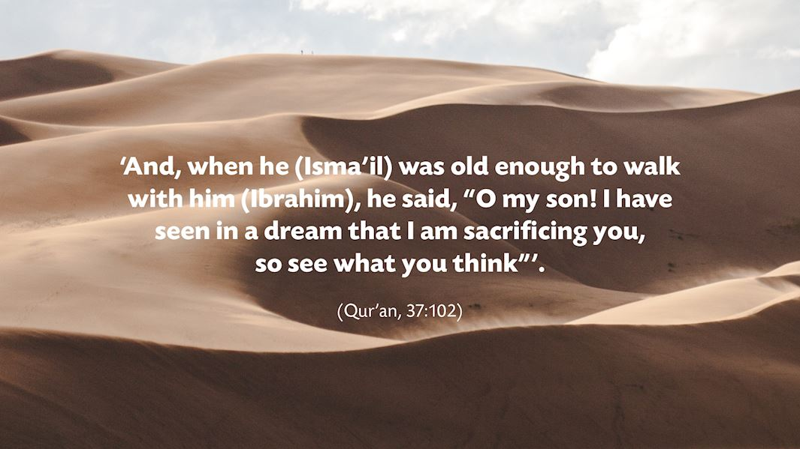

Story behind the Qurbani
When Ibrahim’s (as) firstborn son, Ismail (as) was old enough to walk around with his father and work with him, it was revealed in a dream to Ibrahim (as) that he must sacrifice his son. Ismail (as) did not question this command, just as his mother Hajar (as) had not questioned it when Allah commanded Ibrahim (as) to leave her and her baby son in the desert all those years ago....